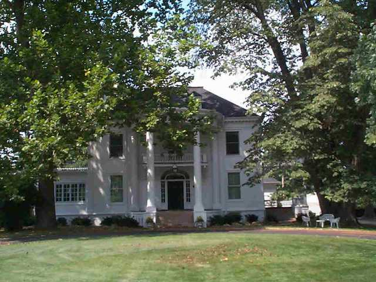

1402 E. Washington

- LeRoy and Mildred Whitmer Residence (1912)
- Colonial Revival, noted for its 2 story curved entry porch.
- Arched lights over entry door, center hall, additions have benn graceful and well considered maintaining the symmetry.
- Whitmer's father was president of People's bank.
- LeRoy was president of American Foundry, North of A&B Garden Center.
- Pickettey notes capital plus salary key to formation and preservation.